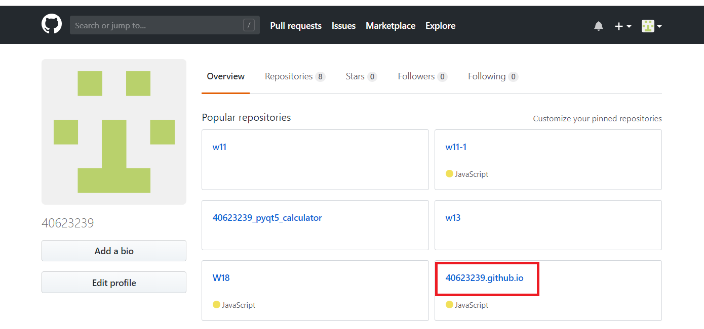
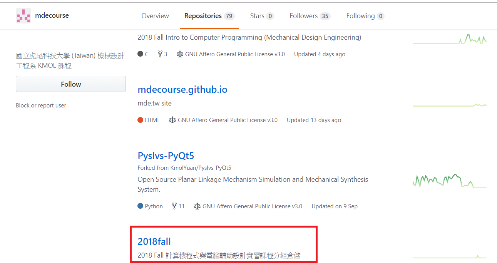
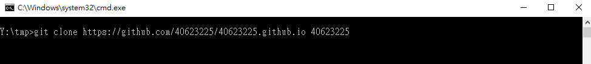
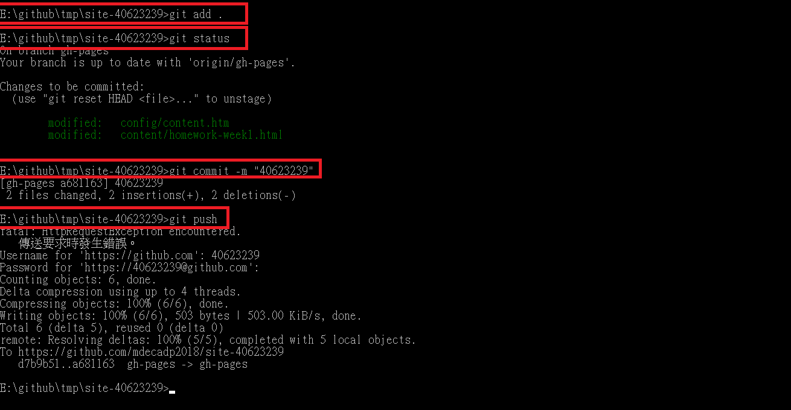
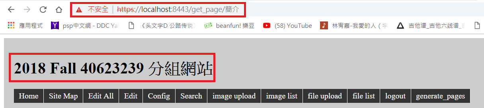

1.建立新的倉儲: 40623239.github.io

2.git clone https://github.com/mdecourse/2018fall

3.git clone https://github.com/40623239/40623239.github.io

4.從2018fall資料夾複製裡面的檔案，排除.git和README.me，並貼到自己的資料夾內
5.>git add .(增加) > git status(檢查狀態) > git commit -m "名稱"( 提交) > git push (推送)

6.開啟python wsgi.py ，進入近端(localhost:8443)，更改標題名稱40623239
